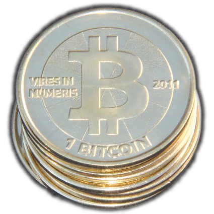
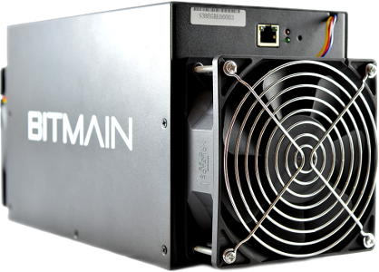

diTHINK 2016
An Analysis of Bitcoin, and Its Impact on Global Finance
Created by Jonathan Gillett / gnu-user
Who am I?
- MASc Student at the University of Ontario Institute of Technology.
- Background in Software Engineering; industry experience in backend development, HPC, Machine Learning, mobile, and web development.
- Bitcoin enthusiast since reading the initial Bitcoin paper!
- Email: jonathan.gillett@uoit.net
- GitHub Account: gnu-user
What is Bitcoin?
 Is it a physical currency? Who is Satoshi Nakamoto? What are they mining anyways?
Bitcoin: A peer-to-peer electronic cash system
Introduced to the world in 2008 by a paper published under the pseudonym Satoshi Nakamoto, a proof of concept was released to the world a year later.
Layperson explanation: “A digital currency without any centralized authority or government, where the supply and security are controlled by mathematics.”
But What is the Benefit to Me?
- Allows you to be in control of your own wealth without relying on a third party (e.g. vault in your own house).
- Ease of use for transferring funds online (benefit over gold or cash which can be difficult to carry and transact with).
- Increasing adoption with mainstream services such as: Newegg, Expedia, and Dell.
What is it Really?
“Bitcoin is a peer-to-peer, decentralized digital currency with a mathematically defined supply that leverages cryptography in order to provide security as a financial medium through the use of a blockchain, a ledger of all transactions, and made secure through a process called mining, which incentives users to process transactions.”
Peer-to-Peer and Decentralized
Peer-to-Peer (P2P)
- P2P communications mean that technically any node within the network can communicate or be connected to any other node (e.g. downloading with torrents).
- In Bitcoin, the actual P2P connections (for performance reasons) is approximately 8 - 16 connections.
- In P2P there can still be a centralized aspect that is required to drive the network, (e.g. trackers for torrents).
Decentralized
- Decentralized networks are P2P, but nodes are connected to small localized networks, rather than everynode.
- This is done for performance reasons, and is how the internet is structured.
- Bitcoin requires no centalized tracker to relay transactions, or catalog data pertaining to the network.
- How is this possible? The blockchain! It makes it possible for a P2P network of untrusted nodes to create a collective trusted data store.
Mathematically Defined Supply
- In the Bitcoin network, currency (BTC) can only be minted as a reward to miners for processing transactions.
- A mathematical function precisely describes the controlled supply made available.
- At any point in time the supply of BTC can be precisely calculated based on this function.
$ \frac{\
\displaystyle\sum_{i=0}^{32} 21000 \big[ \frac{50.10^{8}}{2^i} \big]}{10^{8}} $
Slides can be nested inside of each other. Use the Space key to navigate through all slides. Nested slides are useful for adding additional detail underneath a high level horizontal slide. That's it, time to go back up.
Not a coder? Not a problem. There's a fully-featured visual editor for authoring these, try it out at http://slides.com.
Press ESC to enter the slide overview.
Hold down alt and click on any element to zoom in on it using zoom.js. Alt + click anywhere to zoom back out.
Presentations look great on touch devices, like mobile phones and tablets. Simply swipe through your slides.
Hit the next arrow... ... to step through ... ... a fragmented slide. There's different types of fragments, like: grow shrink fade-out fade-up (also down, left and right!) current-visible Highlight red blue green
You can select from different transitions, like:
reveal.js comes with a few themes built in:
Set
Different background transitions are available via the backgroundTransition option. This one's called "zoom".
You can override background transitions per-slide.
Code syntax highlighting courtesy of highlight.js.
These guys come in two forms, inline:
You can link between slides internally,
like this.
There's a speaker view. It includes a timer, preview of the upcoming slide as well as your speaker notes. Press the S key to try it out. Presentations can be exported to PDF, here's an example:
Set
Additionally custom events can be triggered on a per slide basis by binding to the
Press B or . on your keyboard to pause the presentation. This is helpful when you're on stage and want to take distracting slides off the screen.
Vertical Slides

Basement Level 1
Basement Level 2

Slides
Point of View
Touch Optimized
Fragments
Fragment Styles
Transition Styles
None -
Fade -
Slide -
Convex -
Concave -
Zoom
Themes
Black (default) -
White -
League -
Sky -
Beige -
Simple
Serif -
Blood -
Night -
Moon -
Solarized
Slide Backgrounds
data-background="#dddddd" on a slide to change the background color. All CSS color formats are supported.

Image Backgrounds
<section data-background="image.png">Tiled Backgrounds
<section data-background="image.png" data-background-repeat="repeat" data-background-size="100px">Video Backgrounds
<section data-background-video="video.mp4,video.webm">... and GIFs!
Background Transitions
Reveal.configure({ backgroundTransition: 'zoom' })Background Transitions
<section data-background-transition="zoom">Pretty Code
function linkify( selector ) {
if( supports3DTransforms ) {
var nodes = document.querySelectorAll( selector );
for( var i = 0, len = nodes.length; i < len; i++ ) {
var node = nodes[i];
if( !node.className ) {
node.className += ' roll';
}
}
}
}
Marvelous List
Fantastic Ordered List
Tabular Tables
Item
Value
Quantity
Apples
$1
7
Lemonade
$2
18
Bread
$3
2
Clever Quotes
“The nice thing about standards is that there are so many to choose from”
and block:
“For years there has been a theory that millions of monkeys typing at random on millions of typewriters would
reproduce the entire works of Shakespeare. The Internet has proven this theory to be untrue.”
Intergalactic Interconnections
Speaker View
Export to PDF
Global State
data-state="something" on a slide and "something"
will be added as a class to the document element when the slide is open. This lets you
apply broader style changes, like switching the page background.
State Events
data-state name.
Reveal.addEventListener( 'customevent', function() {
console.log( '"customevent" has fired' );
} );
Take a Moment
Much more
THE END